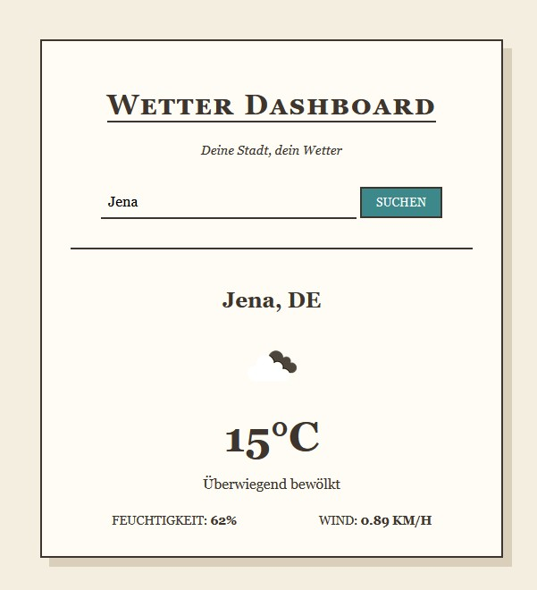
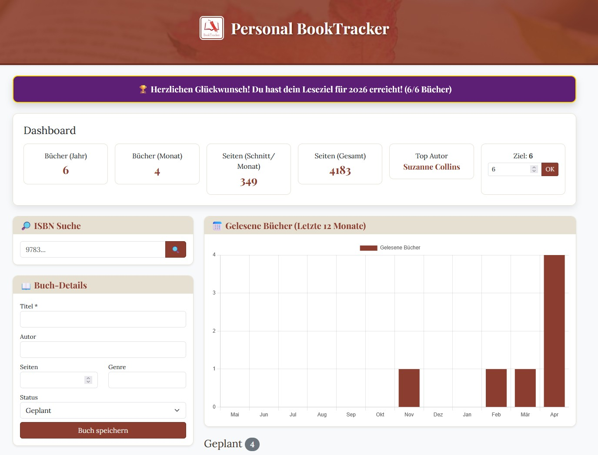

Meine GitHub-Projekte
Wetter Dashboard

Ein Wetter-Dashboard im Vintage-Look, das aktuelle Wetterdaten über ein eigenes Node.js-Backend abruft.
Features:
- Echtzeit-Wetterdaten: Abfrage von Temperatur, Windgeschwindigkeit und Luftfeuchtigkeit via OpenWeatherMap API.
- Sicheres Backend: Nutzung eines Node.js/Express-Proxy-Servers, um API-Keys zu schützen.
- Responsive: Optimiert für Desktop und mobile Endgeräte.
Tech-Stack:
- Frontend: HTML, CSS, JavaScript
- Backend: Node.js, Express
- API: OpenWeatherMap
Das Projekt ist auf GitHub verfügbar: Wetter Dashboard auf GitHub (öffnet in neuem Tab)
Persönlicher Book Tracker

Eine einfache Anwendung zum Verwalten und Nachverfolgen gelesener Bücher.
Features:
- Verwaltung von Lesebüchern: Hinzufügen, Bearbeiten und Löschen von Büchern.
- Auswertung von Statistiken: Genres, Lieblingsautorin, Anzahl der gelesenen Bücher und mehr.
- Validierung von Eingaben
- Sicherheitsabfragen vor dem Löschen von Büchern
Tech-Stack:
- Frontend: HTML, CSS, JavaScript
- Datenpersistenz: LocalStorage
- Möglichkeit zur Erweiterung von Funktionen und Datenbank
Das Projekt ist auf GitHub verfügbar: Book Tracker auf GitHub (öffnet in neuem Tab)
IU Quiz Academy

Eine Projektarbeit zur Entwicklung einer Quiz-Anwendung für die IU Quiz Academy.
Features:
- Verwaltung von Quiz-Fragen und Antworten zum Selbststudium
- Benutzerregistrierung und -anmeldung
- Fortschrittsverfolgung und Statistiken
- Responsive Design für verschiedene Geräte
Tech-Stack:
- Frontend: HTML, CSS, JavaScript
- Backend: Node.js, Express, PostgreSQL
Das Projekt ist auf GitHub verfügbar: IU Quiz Academy auf GitHub (öffnet in neuem Tab)